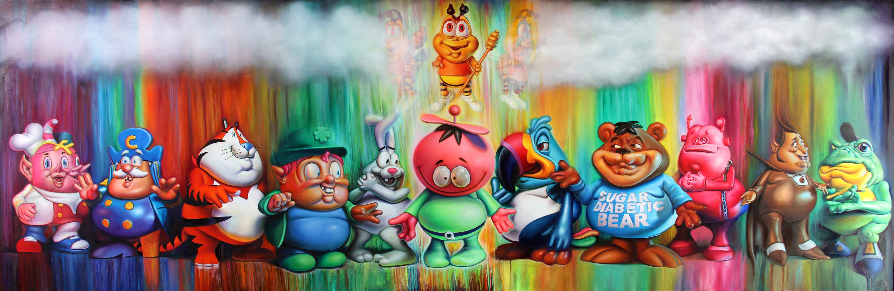
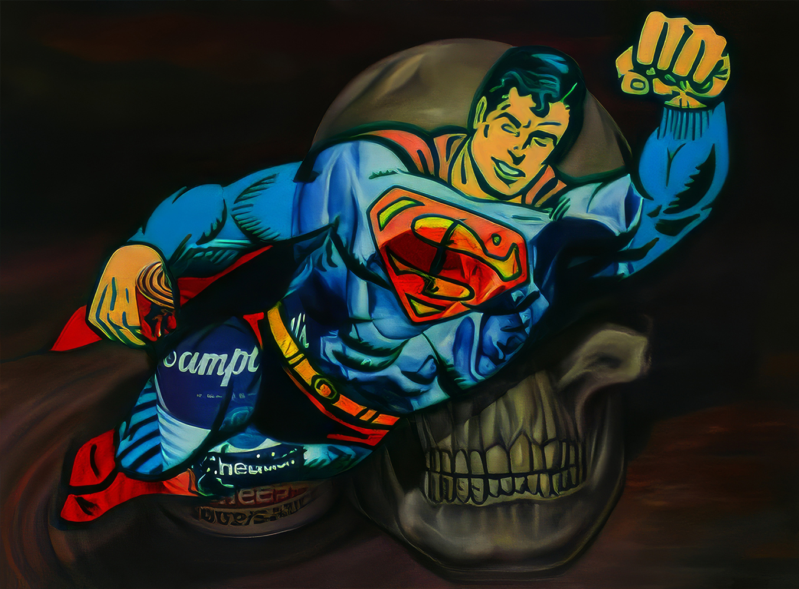
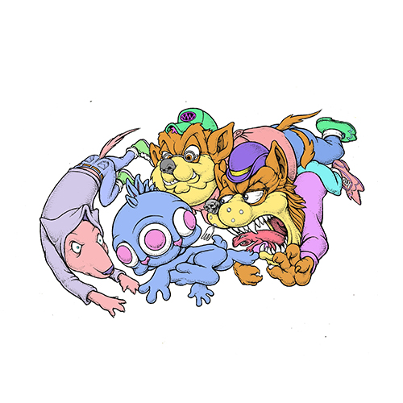
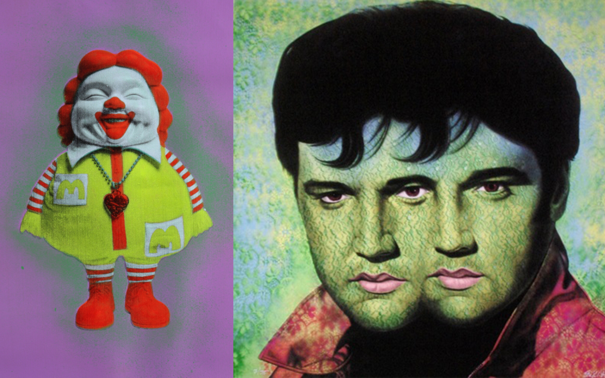
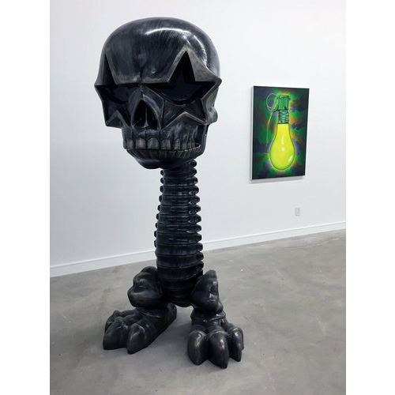
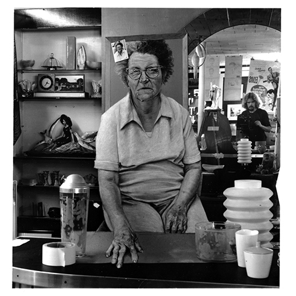
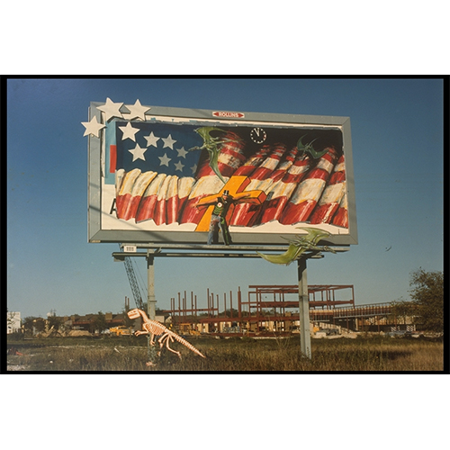

Ron English Catalogue Raisonné
A structured catalogue documenting Ron English’s paintings, drawings, sculpture, photographic works, murals, billboard interventions, exhibitions, and reference materials.
This site is designed as a long-term public research resource. Each section organizes a different part of Ron English’s practice for clear browsing, citation, and future expansion as additional documentation is verified.


Paintings & Works on Paper
Chronological catalogue of Ron English’s paintings and works on paper.

Sketches & Drawings
Preliminary sketches, drawings, and concept studies related to paintings, murals, billboard works, and other projects.

Warholesque
The Warholesque series, including documented variants and related materials.

Sculpture & Three-Dimensional Works
Sculpture, vinyl figures, resin works, and other three-dimensional objects from Ron English’s studio practice.

Photographic Works
Staged and trompe-l’œil photographic works produced from the 1980s onward.

Public Murals
Large-scale murals created for public spaces, festivals, and site-specific installations.

Billboards & Posters
Pirated billboards, poster interventions, and advertising takeovers installed in public space.
Exhibitions
Selected solo and group exhibitions documenting the public presentation of Ron English’s work.

Bibliography
Books, catalogues, articles, interviews, and other reference sources documenting Ron English’s work.